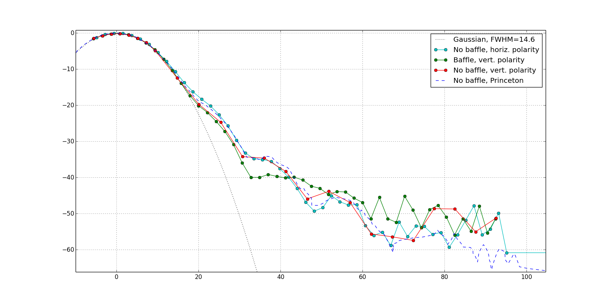
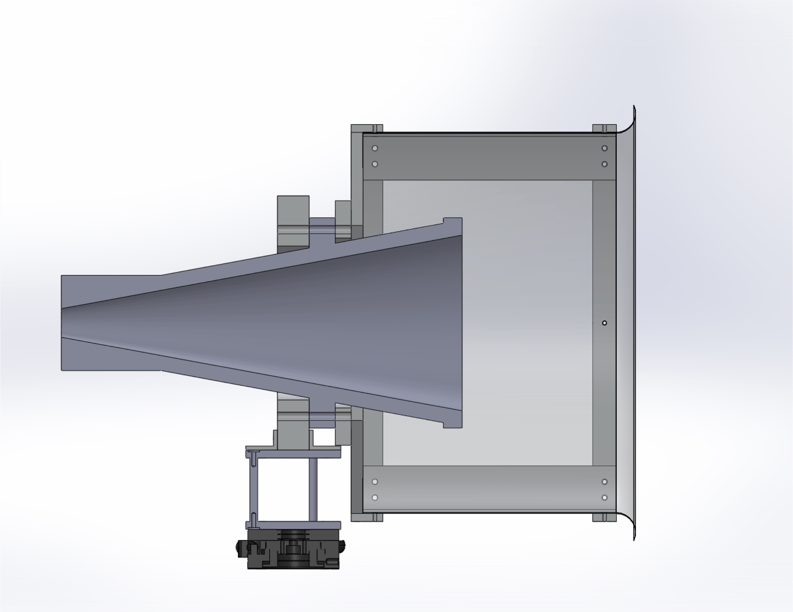

{kind=link}

Comparison of our horn-only trial with that of a baffled horn. The response is still copolar, but the orientation has changed 90 degrees due to the assymmetry of the waveguide connector, and the fact that I used the previous point of contact between the horn and mount to attach the baffle. Will change this for the next trial.
Fig.1 shows the baffled beam has a lower first sidelobe by ~6dB, but appreciabely higher response outside of 45 deg. This could be due to diffraction around the back side of the baffle and through the gap between the aperture and AN-73. We took another unbaffled trial with the new polarity, with 5 deg steps as a sanity check. Those data seem to agree within acceptable uncertainty with the horizontal polarization data.
Fig. 2 shows the design of the baffle. The length and width are chosen so as to begin attenuating the beam at 30deg, where power is down by a factor of 1000. The rolled lip is constructed from strips of aluminum which are notched and covered in AN-73 to fill the gaps. I suspect the problem area is at the boundary between the aperture and the bottom of the baffle, so I think for the next trial I'll construct something similar fig. 2, where back diffraction seems less likely due to the smaller diameter of the AN-73 circle.
|  |
|
|
|  |
{kind=link}